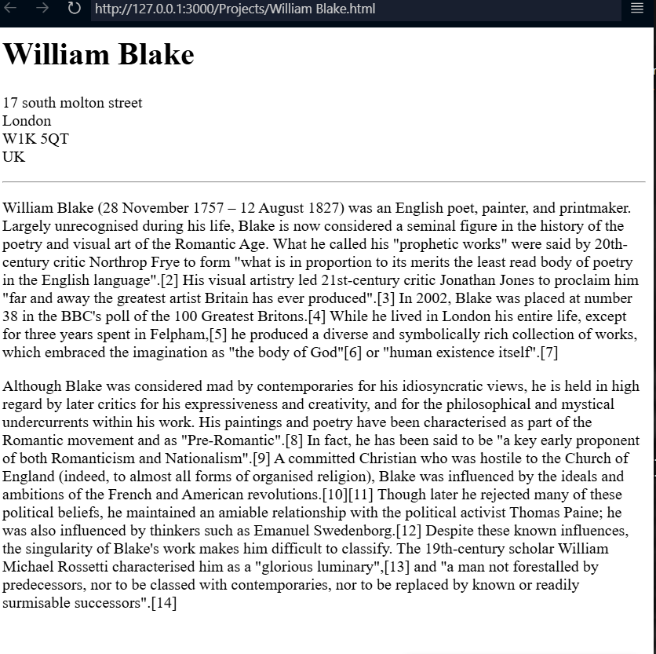

This is some of my recent projects
[divinity] : A website that contains information about the earth's most special entities

Follow the link to this website
[Site_references] : A complete website site that main aim is to provide relative webrefences [ie websites, webapp,articles, actualities e.t.c ]
 Click here to visit My website
About Contact
Click here to visit My website
About Contact
@copyright 2001